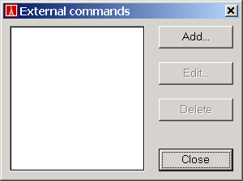
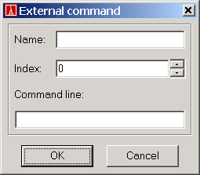

From EiffelStudio, you can define up to 10 external commands. Those commands will have their output redirected in the output pane of the context tool. You can execute them through the Tools menu. A typical usage is to use those external commands to integrate with your source control management solution (e.g. CVS, Visual Source Safe,...)
To define your own command, select "External commands..." in the Tools menu. Then the following dialog will appear:

With this dialog you can:
To add your first command, simply click on the "Add..." button and the following command editor will appear:

In this dialog you can give a name to the command, this name will be displayed in the Tools menu. The index is the position among the external commands of the command in the Tools menu. The command line is the command you want to execute. In order to execute correctly, the application you will execute needs to be in your PATH environment variable or if it is not you must provide an absolute path to the external command.
In addition to the external command name, you can pass as many options as you want plus the following three that will be translated before calling the external command: